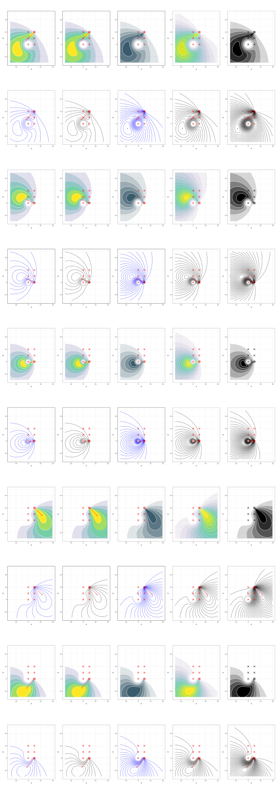

Acoustic capture-recapture (ACRE) models estimate animal density from records of when and were individuals were detected. The first spatial capture-recapture (SCR) methods for acoustic data were developed by Efford, Dawson, and Borchers (2009).
The acre package fits SCR models to estimate animal density from acoustic surveys. In particular, these models can incorporate additional data like received signal strengths, times of arrival, estimated distances, estimated bearings, any location or session or detectors related covariates which are informative or correlated about animals’ density. Other more general software packages exist for SCR (e.g., the comprehensive secr R package), but they cannot handle all data types listed above.
Models that can be fitted in acre include those described by Efford, Dawson, and Borchers (2009), Borchers et al (2015), Stevenson et al (2015), and Stevenson et al (2021).
Installation
The easiest way to install acre package is to first install the devtools package, and then run the following code, although Windows users will need Rtools installed first. If you install Rtools, or have to reinstall acre, then make sure to restart your R session.
Help
The acre package is still in development, and the documentation is still a very patchy. There’s a tutorial here that provides an introduction to the basics of the package.
If you want to use a completed package that is no longer under active development, then consider ascr, a predecessor to acre. The ascr package has full documentation, including examples. However, is more restrictive, particularly in terms of including effects of covariates.
References
Borchers, D. L., Stevenson, B. C., Kidney, D., Thomas, L., and Marques, T. A. (2015). A unifying model for capture-recapture and distance sampling surveys of wildlife populations. Journal of the American Statistical Association, 110: 195–204.
Efford, M. G., Dawson, D. K., and Borchers, D. L. (2009). Population density estimated from locations of individuals on a passive detector array. Ecology, 90: 2676–2682.
Stevenson, B. C., Borchers, D. L., Altwegg, R., Swift, R. J., Gillespie, D. M., and Measey, G. J. (2015). A general framework for animal density estimation from acoustic detections across a fixed microphone array. Methods in Ecology and Evolution, 6: 38–48.
Stevenson, B. C., van Dam-Bates, P., Young, C. K. Y., and Measey, J. (2021) A spatial capture-recapture model to estimate call rate and population density from passive acoustic surveys. Methods in Ecology and Evolution, 12: 432–442.